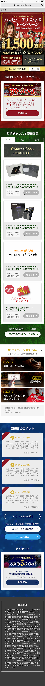

キャンペーンLP
クリスマスキャンペーン
-
担当LPデザイン(ミニゲームは担当外)、商品画像レタッチ、告知ポップアップ、バナー
-
使用ツールPhotoshop:メインビジュアル、画像加工
Adobe XD:ワイヤーフレーム、デザインカンプ -
ポイント年に2回行われる大規模なプレゼントキャンペーンのためのLPです。この年初めてイメージモデルのスチールを使うことと、高額なプレゼント金額をアピールできるよう豪華なデザインにしたいとの要望でした。全体の色味は安っぽい印象にならないよう、暗めのクリスマスカラーを使用し、大人っぽく重厚な印象になるよう配色しています。金のグラデーションはレガシーな印象にならないよう、色相の近い黄色と白を使って古臭くならないように、また読みにくくならないよう注意しました。モデルのスチールについては背景のプレゼントの画像に負けないよう、目を引く印象的な表情の写真を使用し、レタッチでメイクなどの色味を濃くコントラストを強めました。

戻る